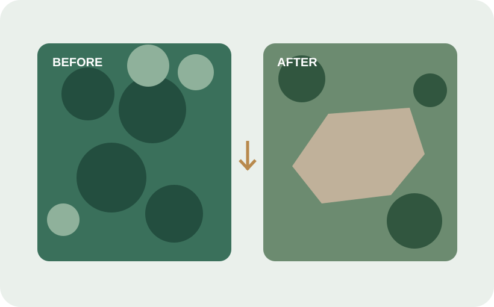
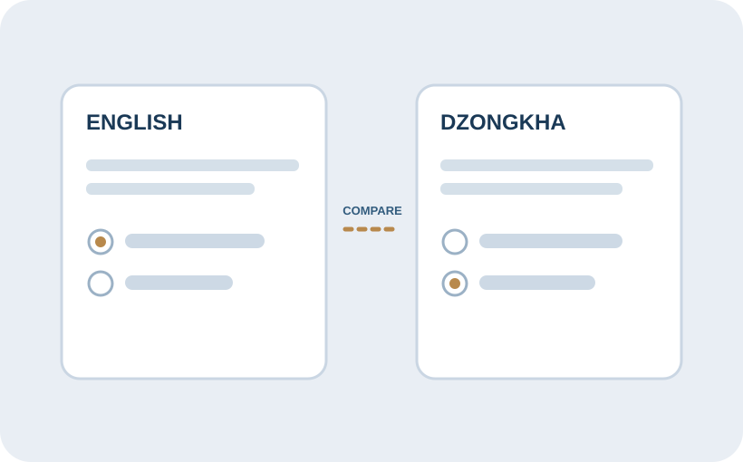

Case Study 01
Blood Group Detection AI
Exploring an AI model that uses fingerprint patterns to predict a blood-group category.
AI research
Explore Selected projects / 2026
Four projects viewed through the questions they explore, their intended methods, and what still needs to be verified. No fabricated metrics or project outcomes.
Exploring an AI model that uses fingerprint patterns to predict a blood-group category.

An AI-oriented learning experience centered on Bhutanese cultural dance.

Using AI to identify possible forest-cover changes from image data.

A parallel comparison of language-model answers to Dzongkha and English multiple-choice questions.